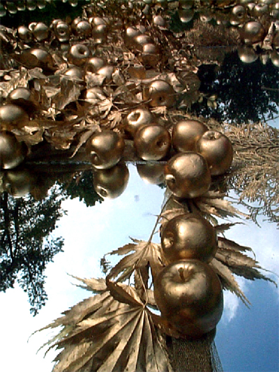
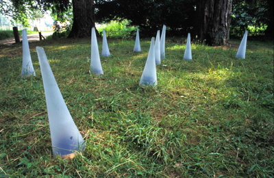
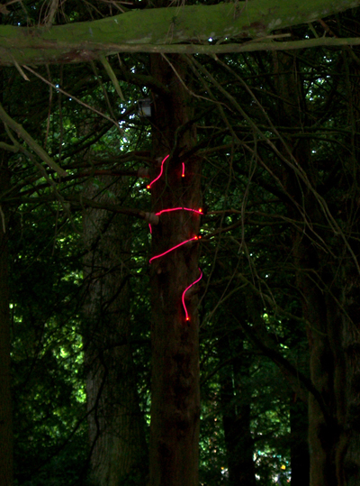
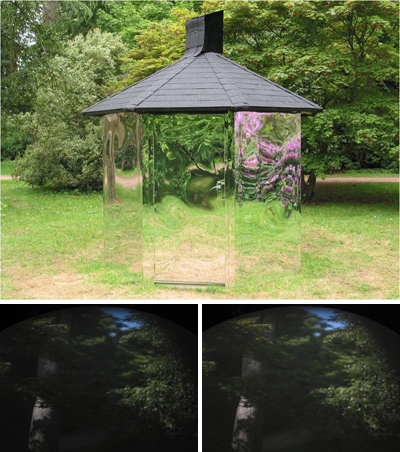

InSite Arts curated a programme of installations, by renowned and emerging artists, as part of the second and third Westonbirt Festival of the Garden, being held at the Forestry Commission's National Arboretum in Gloucestershire.
Collectively the artists all worked with a broad range of media and their backgrounds are diverse. The artists were commissioned to explore the relationship between their practice and the environment of the Arboretum. Responding to the history and heritage, as well as the current natural beauty of the tree collection, the brief was to create original installations that challenge visitors' perceptions of the landscape.
Each artist was selected for their commitment to creative research, originality, imaginative use of materials and wit.




2003:
 Clare Brew - The Tree Pieces
Clare Brew - The Tree Pieces
 Katherine Clarke - Pleasure Garden of the Utilities
Katherine Clarke - Pleasure Garden of the Utilities
 Katayoun Dowlatshahi - Photogenic Tracings
Katayoun Dowlatshahi - Photogenic Tracings
 Susan Flowers - Sky Reach
Susan Flowers - Sky Reach
 Pip Hall - The Trees
Pip Hall - The Trees
 John Newling - Imagine if spring didn't come
John Newling - Imagine if spring didn't come
 Samantha Stork - Over-Time
Samantha Stork - Over-Time
2004:
 Andrew Stonyer - Sounds of Sunlight
Andrew Stonyer - Sounds of Sunlight
 Patricia MacKinnon-Day - The Celestial Banquet
Patricia MacKinnon-Day - The Celestial Banquet
 Leo Fitzmaurice - thesigntttellyouwheretog
Leo Fitzmaurice - thesigntttellyouwheretog
 Jane Watt - Reflectagon
Jane Watt - Reflectagon
 Hannah Bennett - Regenerate
Hannah Bennett - Regenerate
 Claire Morgan - Leave
Claire Morgan - Leave